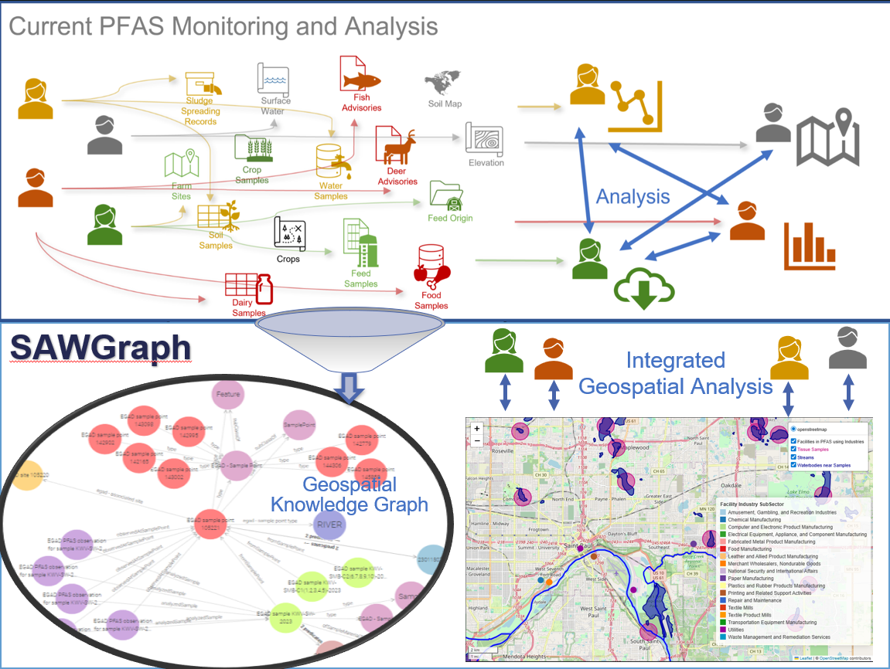

Overview
Safe Agricultural Products and Water Graph (SAWGraph): An Open Knowledge Network to Monitor and Trace PFAS and Other Contaminants in the Nation's Food and Water Systems
A ProtoOKN project
The goal of SAWGraph is to onnect federal and other datasets to more quickly analyze data and make decisions around Per- and polyfluoroalkyl substances (PFAS) sources, testing, impacts, and risks
The graph will integrate data data and provide interfaces that support analysis, mapping and communication of the results of testing for PFAS contamination, spatial connections to known and potential sources to support PFAS research and decision making around PFAS testing and mitigation.
The primary end users of SAWGraphs are personnel at state and federal agencies who monitor the environment and the safety of drinking water and agricultural land and products. End users include but are not limited to personnel at EPA and state environmental protection agencies (e.g. state environmental toxicologists) and at USDA and state agricultural agencies. Other potential users include experts from FDA, USGS and similar state agencies.
We distinguish four types of users based on their primary responsibility: (1) drinking water monitoring; (2) understanding the extent and sources of environmental contamination with PFAS; (3) PFAS researchers; (4) environmental justice.
The graph is expected to empower these users to: (1) formulate and implement comprehensive test plans aimed at monitoring elevated PFAS levels in drinking water or agricultural lands, (2) pinpoint the most significant sources of PFAS in a state and how it impacts disadvantaged communities; (3) identify populations at elevated risk and prioritize testing resources and support accordingly; (4) design contamination management and remediation plana; and (5) identify research gaps in knowledge about PFAS fate and transport. Collectively, these applications will expedite comprehension of PFAS contamination and its mitigation, while ensuring the efficient and equitable allocation of testing and remediation resources.
Use Cases
- Understanding Testing and Testing Gaps: Where have we tested and were are significant gaps?
- Where have we tested for what?
- What waterbodies are near potential contamination sources?, see Testing Gaps Example Use Case
- What do the available test results show in a particular region?
- Where are the biggest testing gaps based on what is known so far?
- Assess and Map Risks: Who is impacted the most?
- Where are existing test results especially concerning and suggest prioritizing further testing or investigation?, see Assessing Impacts Example Use Case
- Which communities are at greatest risk?
- Trace Contamination: Where does the PFAS end up? Where does it originate from?
- How do specific point sources like industrial facilities, landfills, firefighting training sites, or biosolid application sites affect their surroundings?
- What potential sources are upstream from concerning test results?
- What do the test results downstream from a potential point source show?, see Contaminant Tracing Example Use Case
- What water wells downstream from or connected to sites with concerning levels should be prioritized for testing?
- Research: What linkages does the data suggest? What warrants further research?
- Where are unexplained high test results?
- What agricultural practices seem to reduce PFAS exposure?
- What connections are between different PFAS substances in the environment?
We don’t just want to provide raw data, but actionable knowledge that helps answer these questions

About PFAS Contamination
What are PFAS?
PFAS: A group of thousands of manmade chemicals
- Highly Persistent due to strong carbon-fluorine bonds
- Informally named "Forever Chemicals", due to their properties, they do not break down easily
Toxicology and human health impacts of PFAS according to ATSDR (CDC):
- Exposure and effects are poorly understood and likely underestimated
- Increased cholesterol levels
- Decreased vaccine response in children
- Changes in liver enzymes
- Small decreases in infant birth weights
- Increased risk of high blood pressure or pre-eclampsia in pregnant women
- Increased risk of kidney or testicular cancer
Where are PFAS?
- They are dispersed via air, soil and water
- How does PFAs get into the environment?
- Chemical Plants
- Landfills
- Wastewater
- Biosolids used as fertilizer in agriculture
- Other Point Sources: Airports, firefighting training sites, etc.
- Non-point Sources: spills, wet or dry deposition, commercial uses
What's a Knowledge Graph?
- Establishes connections (links) across datasets
- Kind of a distributed database that can grow over time

Read more about Geospatial Knowledge Graphs
Some papers on other geospatial knowledge graphs that were developed with the help of some of the team members:
Source data
- PFAS testing results from drinking water (federal: PFAS Analytics Tools; original source UCMR data and select state data); ground and surface water, soil and tissue samples.
- Point sources for PFAS based on the Facilities Registry Service using North American Industry Classification System (NAICS) and Standard Industrial Classification (SIC) as well as DoD sites, DoE sites, airports, and superfund sites and landfills
- EPA’s PFAS release data collected in accordance with the Clean Water and Clean Air Acts
- Potentially impacted features like private water wells and drinking water protection areas from select states.
- Data layers on agricultural uses; surface water (stream reaches, watersheds) and groundwater (aquifers) features via connections to geoconnex and KnowWhereGraph.
- Geospatial relations to connect data: locations and sites are spatially integrated via S2 cells (level 13 or finer) and via administrative regions (geoIds, FIPS codes, ZIP codes, etc.) and hydrologic connections
Competency questions and User queries
- Testing Coverage and Gaps: Where (locations/towns) should we prioritize environmental/water testing?
- E.g. which wells are within 5 miles of landfills/airports/biosludge application sites? Which wells near locations with a reported PFOA contamination above 4ppt have not been tested?
- Assessing Contamination Impacts: Where and who is impacted? (Prevalence, risk/vulnerability mapping)
- E.g. Which towns or counties have multiple test results with PFOS levels above 20ppt with no known contamination source nearby? Which chemicals show the highest average readings in samples from a particular region? Which towns/counties are most vulnerable based on their proximity to known or potential PFAS sources?
- Contaminant Tracing: What are potential sources of contamination at a particular location or area?
- E.g. What potential contamination sources exist 20 miles upstream from the sample result? What wells are hydrologically connected to other wells with a reported contamination of +10ppt
Team
Team from University of Maine, Kansas State University, Northeastern University and EPA brings together computer science, data science, geospatial, and chemistry experts

Pascal Hitzler
Co-PI
Kansas State University
Information

Hande Küçük McGinty
Co-PI
Kansas State University
Information

Vasu Kilaru
Federal Partner
EPA

Sonia Moavenzadeh
Research Assistant
University of Maine
.
.

Adrita Barua
Research Assistant
Kansas State University

Yinglun Zhang
Research Assistant
Kansas State University
Information

Revanth Babu Raavi
Research Assistant
Kansas State University
Information


 0000-0002-5331-5052
0000-0002-5331-5052